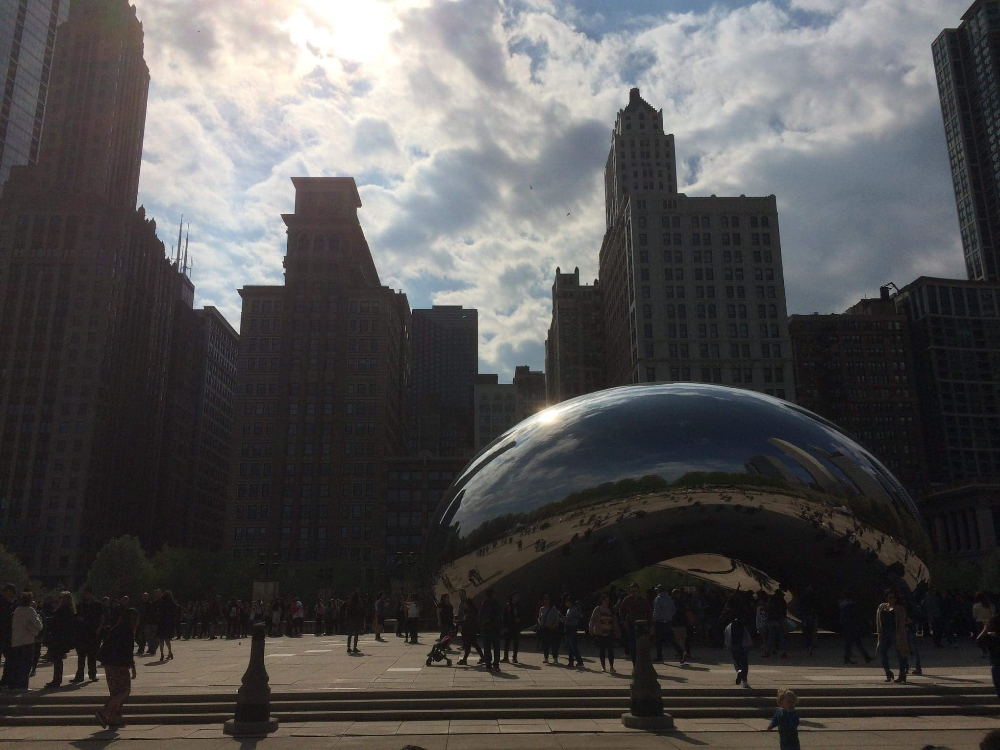
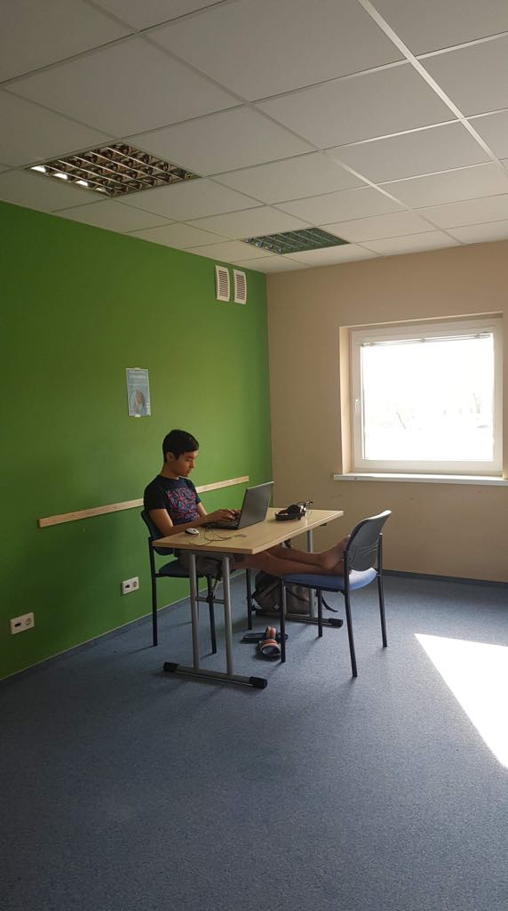

Interests are big part of our lives!
I like to think that I am different than most of the people. I don’t like cold weather, parties, alcohol, unsafe connections or drugs. I am not a big fun of photography, however I love taking pictures of really beautiful places, for example first picture. It might be not the best picture, but I like it. I also like quietness and peace especially when I study or read (look at the second picture, the study room is empty). I can be noisy and loud only with friends. I like good food, warm weather, protected connections (whatever that means to you), and I like travelings. We talk about it a lot, but that is for personal meeting!

